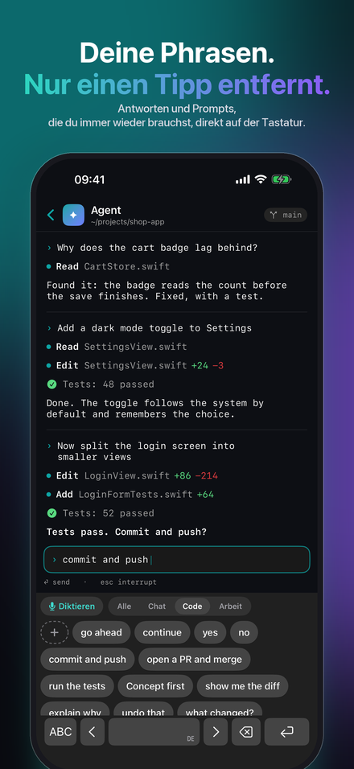
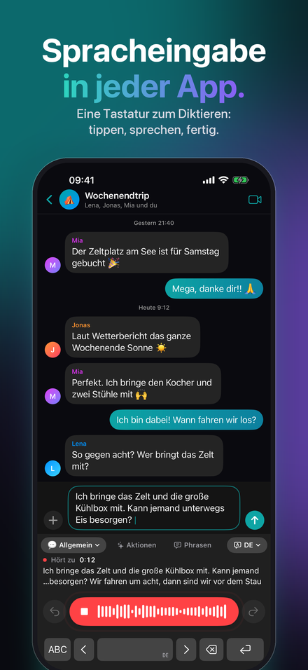
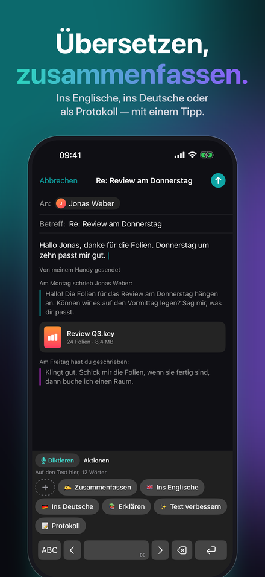
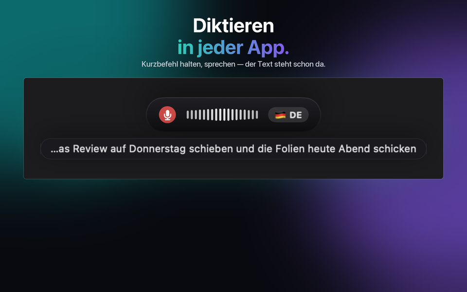
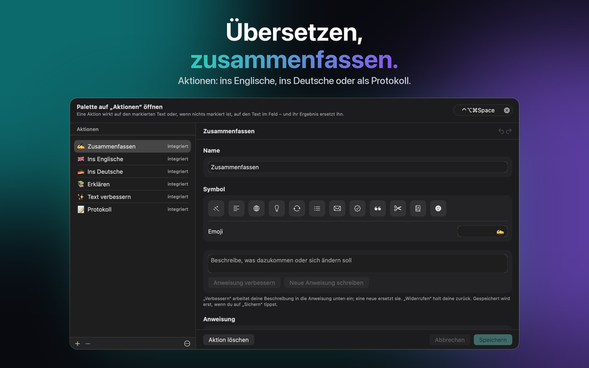
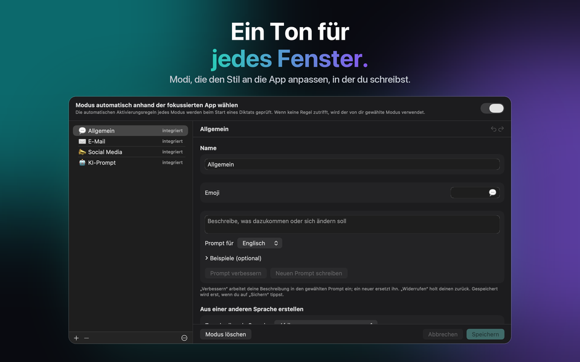

Für Mac, Windows, iPhone und iPad
Sprache zu Text in jeder App
Du sprichst. Es schreibt. JustTalk ist Spracherkennung für deinen Mac: Diktieren in jeder App, mit KI zu fertigem Text.



JustTalk holen
Dieselbe App auf jeder Plattform, mit denselben Modi, denselben Sprachen und derselben Wahl zwischen lokal und Cloud. Jede wird einmal im eigenen Store gekauft: im App Store für Mac, iPhone und iPad, im Microsoft Store für Windows. Auf Mac, iPhone und iPad hält iCloud deine Modi, Phrasen, Aktionen und Einstellungen gleich; Windows ist über die Konfigurationsdatei dabei.
macOS
macOS 14 oder neuer, Apple Silicon oder Intel. Diktiere per Tastenkürzel in jede App.
Windows
Windows 10 (1809) oder neuer, x64, x86 oder ARM64. Der Installer ist ein signiertes MSIX.
iPhone & iPad
iOS und iPadOS 26 oder neuer. Eine Tastatur, aus der du in jeder App diktierst, und ein Teilen-Menü für Aufnahmen, die du schon hast.
Was es tut
Diktier-Software liefert dir meist nur ein Transkript und überlässt dir das Aufräumen. JustTalk erledigt das mit: Drück einen Hotkey, sprich, und der bereinigte Satz wird in die App eingefügt, die gerade im Vordergrund ist — kein Fenster zum Wechseln, nichts zum Rüberkopieren.
Geschrieben, nicht transkribiert
Ein Sprachmodell entfernt die Ähs und korrigiert die Zeichensetzung. Was im Feld landet, ist etwas, das du auch so getippt hättest.
Lokal oder Cloud, deine Entscheidung
Whisper und ein lokales Modell laufen vollständig auf deinem eigenen Rechner, kostenlos und offline. Oder verbinde Google, OpenAI, Groq, Mistral oder Anthropic mit deinem eigenen Schlüssel und bezahle sie direkt.
100 Sprachen
Wird erkannt, während du sprichst, auch mitten im Satz. Keine Einstellung zum Umschalten.



Was es kostet
Die App ist eine einmalige Zahlung. Die Modelle sind kostenlos, wenn du sie lokal ausführst, und Pay-as-you-go, wenn du einen Cloud-Anbieter nutzt — abgerechnet von ihm, nicht von uns. Zehn Minuten Diktat am Tag kosten bei Groq zu den Preisen von September 2026 deutlich unter einem Dollar im Monat; bei intensiven 45 Minuten am Tag sind es etwa ein bis drei Dollar. Sieben Tage lang ist alles freigeschaltet, ohne Einschränkung und ohne Kreditkarte.
Nach der Testphase funktioniert die kostenlose Version weiter, jeden Tag mit 2 Diktaten von bis zu 30 Zeichen, 5 Phrasen, 5 Aktionen und, auf iPhone und iPad, 5 Tippkorrekturen. JustTalk Pro macht alles für eine einmalige Zahlung unbegrenzt — mit einem Cloud-KI-Dienst begrenzt dann nur dein Zugang zu diesem Dienst die Nutzung. Es ist kein Abo, und es gibt nichts zu kündigen.
Wie es genutzt wird
E-Mail und Chat
„General“ übernimmt das Alltägliche; die anderen Modi bringen ihren eigenen Ton und Wortschatz mit, und der richtige kann automatisch anhand der App gewählt werden, in die du gerade diktierst.
Meetings
Nimm beide Seiten eines Anrufs auf und erhalte ein Transkript des ganzen Gesprächs statt nur deiner Hälfte.
Phrasen und Aktionen
Was du immer wieder schreibst, ist einen Tipp entfernt — auf der iPhone-Tastatur und in der Palette am Computer. Eine Aktion schreibt die Markierung oder das ganze Feld nach einer Anweisung um, die du schreibst — oder vom Modell schreiben lässt.
Tippen auf dem iPhone
Die JustTalk-Tastatur hat auch alle Buchstaben, und „Tippfehler korrigieren“ räumt auf, sobald du innehältst: Tippfehler, Großschreibung, Satzzeichen — nie deine Formulierung.
Aufnahmen
Sprachmemo, Vorlesung, Interview: Öffne oder teile die Datei mit JustTalk und erhalte die Abschrift — auf jeder Plattform.
Lokal oder Cloud — du entscheidest, und wir sagen, was jede Option kostet
JustTalk ist die App rund um die Modelle, nicht die Modelle selbst. Führe sie lokal aus — Whisper plus ein lokales Sprachmodell über llama.cpp, Ollama oder LM Studio — und nichts wird hochgeladen, nichts wird abgerechnet, es gibt kein Konto. Dieser Weg ist vollwertig unterstützt und will einen Mac oder PC mit Arbeitsspeicher übrig haben; auf iPhone und iPad übernimmt die Erkennung auf dem Gerät selbst das Diktieren. Oder verbinde einen Cloud-Anbieter mit einem Schlüssel, den du selbst erstellst: schneller und genauer, und er rechnet direkt mit dir ab, was du nutzt. So oder so keine Analyse, kein Tracking, kein Konto bei uns. Die Datenschutzerklärung sagt genau, was welche Option sendet. In der App zeigt „Deine Daten und KI“ jederzeit, wohin deine Stimme und dein Text gehen, und die KI-Erklärung sagt, welche KI was tut.
Diktiere in 100 Sprachen, darunter Englisch, Deutsch, Französisch, Spanisch, Italienisch, Portugiesisch, Japanisch, Koreanisch, Griechisch, Ukrainisch und Russisch.
JustTalk
Kostenlos zum Ausprobieren, mit einem Kauf freigeschaltet. Mac, Windows, iPhone und iPad, 100 Sprachen, und nichts wird hochgeladen, außer du verlangst es.